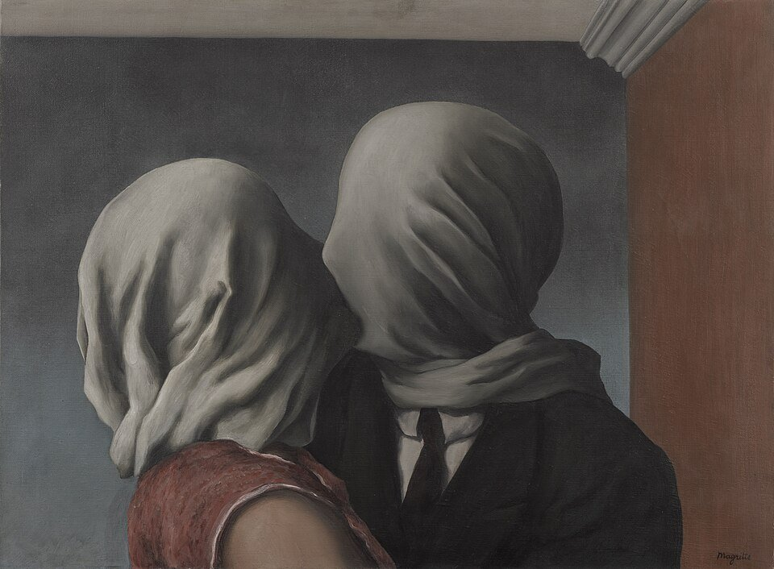

The Lovers
René Magritte · 1928 · Oil on canvas · 54 × 73.4 cm · Museum of Modern Art, New York
In copyright. Look and learn: shown for study, not for download.
Magritte made this in Paris in 1928, the first of four versions he painted that year; the second is in the National Gallery of Australia. He had moved to Paris after his first solo show, in Brussels in 1927, drew poor reviews. Until 1926 he had earned his living designing posters and advertisements, and before that as a draughtsman in a wallpaper factory. He was twenty-nine. The canvas came to the Museum of Modern Art with Richard S. Zeisler's collection.